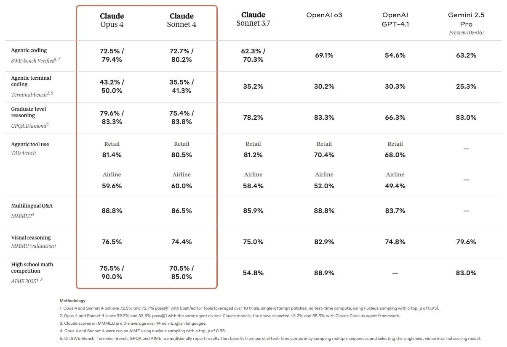

Writing evaluations for LLM products is hard. It takes a lot of effort to design a system that effectively identifies value and surfaces issues. So, why do so?
First, public evals will not cut it. The release posts for new language models often include tables displaying results from several of the most popular public evaluations. For example, this table from the Claude 4 release post:

These widely used, off-the-shelf evals measure various capabilities of models like real-world GitHub issue resolution, tool use, etc. While these public evaluations serve as a good reference point for choosing which models to experiment with initially, they’re not a good measure of how well your product specifically performs. As Yan (2024) writes, “If you’ve ran off-the-shelf evals for your tasks, you may have found that most don’t work. They barely correlate with application-specific performance and aren’t discriminative enough to use in production.” When designing some LLM product, your task is to evaluate that product rather than the model underlying it.
Does an LLM product really need its own evaluation, though? Especially in early development stages, couldn’t the product builder and/or domain expert just test it out themselves, interactively? While this works in the earliest stages of experimentation, you can’t get by with not running evals if you want your product to go to production. As applications develop from prototypes into production systems, keeping up with all of the potential points of failure while trying to iterate can become unsustainable without sufficient automation: “Addressing one failure mode led to the emergence of others, resembling a game of whack-a-mole” (Husain 2024b). Thus, without automated evals, as you otherwise get closer and closer to production-readiness, the pace at which you can iterate on your product slows to a halt. In contrast, “If you streamline your evaluation process, all other activities become easy. This is very similar to how tests in software engineering pay massive dividends in the long term despite requiring up-front investment” (Husain 2024b).
In short, custom evals are necessary to bring your LLM product from demo to production.
How to write good evals
Writing an eval with vitals requires defining a dataset, a solver, and scorer. I’ll speak to each of these elements individually.
Datasets
In vitals, datasets are a data frame with columns, minimally,
input and target. A “sample” is a row of a
dataset. input defines questions inputted by end users and
target defines the target answer and/or grading guidance
for it. What sorts of input prompts should you include, though?
In short, inputs should be natural. Rather than “setting up” the model with exactly the right context and phrasing, “[i]t’s important that the dataset… represents the types of interactions that your AI will have in production” (Husain 2024a).
If your system is going to answer a set of questions similar to some set that already exists—support tickets, for example—use the actual tickets themselves rather than writing your own from scratch. In this case, refrain from correcting spelling errors, removing unneeded context, or doing any “sanitizing” before providing the system with the input; you want the distribution of inputs to resemble what the system will encounter in the wild as closely as possible.
If there is no existing resource of input prompts to pull from, still try to avoid this sort of unrealistic set-up. I’ll specifically call out multiple choice questions here—while multiple choice responses are easy to grade automatically, your inputs should only provide a system with multiple choices to select from if the production system will also have access to multiple choices (Press 2024). If you’re writing your own questions, I encourage you to read the “Dimensions for Structuring Your Dataset” section from Husain (2024a), which provides a few axes to keep in mind when thinking about how to generate data that resembles what your system will ultimately see:
You want to define dimensions that make sense for your use case. For example, here are ones that I often use for B2C applications:
Features: Specific functionalities of your AI product.
Scenarios: Situations or problems the AI may encounter and needs to handle.
Personas: Representative user profiles with distinct characteristics and needs.
The other part of the “how” is the mechanics. You probably don’t want
to paste in a bunch of questions into a call to tibble(),
escape a bunch of quotes, etc. Instead, here’s how I’ve written
evals:
- Consider what metadata you want to keep track of along with your
inputandtarget. Do you want to tag questions with categories? Include a source URL? This isn’t stuff that will actually be integrated into the eval, but that will be carried along throughout the evaluation to aid you with analysis down the line. - Prompt a model (Claude 4 Sonnet is quite good at this) to make you a
Shiny app that will help you generate samples quickly (and, hopefully,
joyfully). The app might provide you with a free text box to paste in
the
inputand another for thetarget, fields for whatever metadata you’d like to carry along, and a “Submit” button. When you click “Submit”, the app should write the inputted values into a.yamlfile in some directory and “clear” the app so that you can then add a new sample. Here’s a sample prompt that I used to help me write an eval dataset recently. - Then, once you’ve created a sufficient number of samples (30 is a good place to start), read all of the yaml files in that directory into R, bind rows, and you’ve got a dataset. Here’s a sample script that does this for the eval linked in the previous bullet.
Solvers
The solver is your AI product itself. If the product is a chat app or
an app that integrates with a chat feature, you can supply the ellmer
Chat object powering the chat directly as the solver_chat
argument to generate() and you’re ready to go. In that
case, ensure that the same prompt and tools are all attached to the Chat
object as they would be in your product.
Scorers
Scorers take the input, target, and the
solver’s output, and deliver some judgment about whether the solver’s
output satisfies the grading guidance from target closely
enough. At the most fundamental level, LLMs are useful in situations
where inputs and outputs are diverse and considerably variable in
structure; as a result, determining correctness in evals is a hard
problem.
When implementing a scorer, you have a few options
- Deterministic scoring: In some specific situations, it’s possible to
write code that can check correctness without any use of an LLM. For
example, if your solver chooses an answer from multiple choices, you
could just use a regular expression (as in the scorers
detect_match()and friends). Or, if your scorer outputs code, you could check if it compiles/parses and then run that code through a unit test. - LLM-as-a-judge: In most situations, you’ll want to pass the input,
the solver’s result, and the grading guidance (
target) to a model, and ask the model to assign some score. (vitals natively supports factors with levelsI < P < C, standing for Incorrect, (optional) Partially Correct, and Correct.) - Human grading: In the earliest (before you even develop a scorer) and latest (right before your product goes to production) stages of product development, you should be spending a lot of time looking at the solver’s outputs yourself.
| Technique | Deterministic Scoring | LLM-as-a-judge / model grading | Human grading |
|---|---|---|---|
| Speed | Very fast | Pretty fast | Very slow |
| Cost | Very cheap / “free” | Pretty cheap | Very expensive |
| Applicability | Narrow | Broad | Broad |
Understandably, many people bristle at the thought of LLMs evaluating
their own output; while these systems do take some careful refinement,
“when implemented well, LLM-as-Judge achieves decent correlation with
human judgments” (Yan et al. 2024). While
vitals will safeguard you from many common LLM-as-a-judge missteps with
model_graded_qa(), some recommendations on implementing
these systems for your own use cases:
You should still be looking at lots of data yourself: “After looking at the data, it’s likely you will find errors in your AI system. Instead of plowing ahead and building an LLM judge, you want to fix any obvious errors. Remember, the whole point of the LLM as a judge is to help you find these errors, so it’s totally fine if you find them earlier” (Husain 2024a). Especially when you first implement the LLM-as-a-judge, look at its reasoning output and ensure that it aligns with your own intuitions as closely as possible. Sometimes this means fixing the judge, and sometimes it means going back and editing grading guidance in the samples themselves.
-
Start with binary judgments: It may be tempting to implement some sort of scoring rubric that assigns a numeric score to output. Instead, start off by trying to align a scorer that only returns Pass/Fail with your own intuitions about whether an output is satisfactory. With the right
instructionsargument, you might be able to getmodel_graded_qa()to output trusted judgments reliably.- One exception here is if you’re measuring some product’s ability to follow a set of instructions. The chores eval is one example of this, where the scorer assigns a binary judgment to a set of scoring items, and then R code takes those judgments and sums them to create a numeric score.
Use strong models to judge: In your production system, you might be interested in driving down costs and reducing latency by choosing smaller models in your solver. In your LLM-as-a-judge system, though, stick with “flagship” models like Claude 4 Sonnet, GPT 4.1, Gemini 2.5 Pro, etc.; you’re much more likely to get results you can begin to trust from larger models.